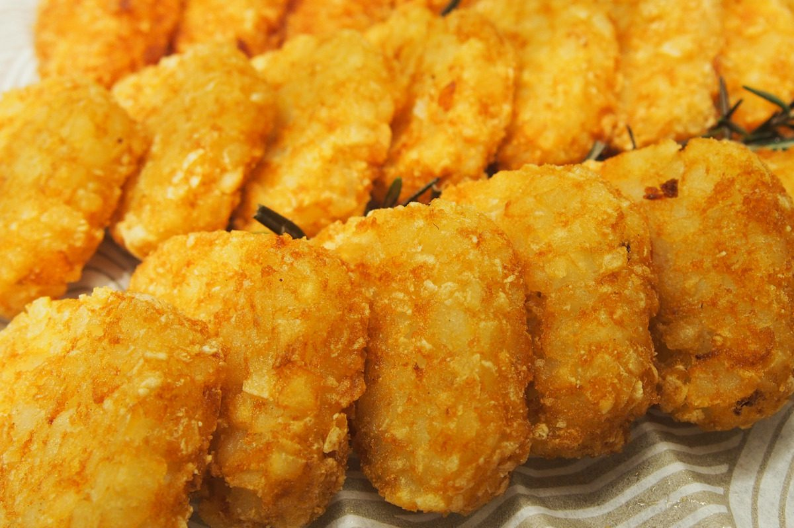

Airfryer Hashbrowns

Crispy golden hash browns are cooked to perfection in an air fryer. Serve with crispy bacon, and eggs, and you'll be enjoying a breakfast of champions.
Ingredients
Steps
- Preheat the air fryer to 200° C or 390° F which usually takes around 3 minutes depending on the air fryer.
- Place the 3 hash browns into the basket
- Cook for 9 minutes until golden brown.